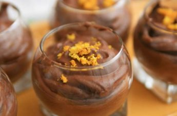

La véritable mousse au chocolat
Il s'agit de la meilleure
mousse au chocolat...
Tout simplement!

| Difficulté | Temps de préparation | Temps de cuisson | Temps total |
|---|---|---|---|
| Moyenne | 30 minutes | 10 minutes | 12 heures |
Ingrédients
- 10 à 12 oeufs
- 100 gr de sucre
- 300 gr de chocolat noir
- 80 gr de beurre
 pour 10 pots
pour 10 pots
Préparation
- Dans un poêlon, faire fondre le chocolat et le beurre à feu doux. Tourner de temps en temps
- Casser les oeufs, séparer les blancs et les jaunes dans deux récipients distincts
- Ajouter le sucre aux jaunes - bien mélanger jusqu'à éclaircir
- Ensuite, ajouter le mélange chocolat-beurre refroidi aux jaunes sucrés - bien mélanger
- Battre les blancs en neige, avec au préalable une pincée de sel
- Délicatement et progressivement ajouter le blanc-neige à la pâte chocolatée
- Remplir les pots avec la mousse obtenue, et mettre 12 heures au frigo